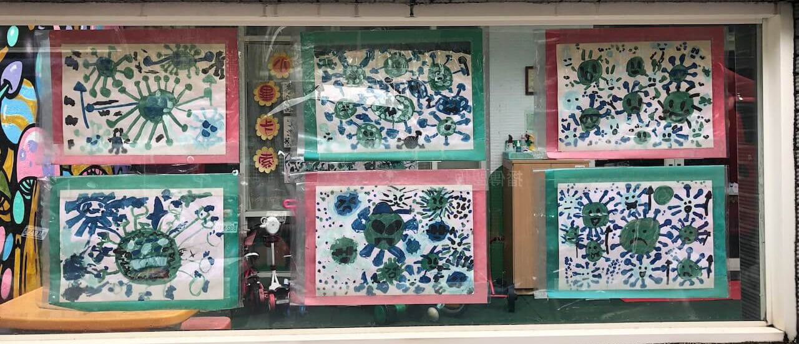

回顧人類末日 2020
2020 真的結束了，終於！
The begining of the end
2019 我去了 Kavulungan 跨年，每次只要在山上待三天再回到人類區域就會有一種恍如隔世的感覺，2020/1/1 那一天怎樣也預料不到新的一年會這麼接近人類末日。
上班回顧
- 設計出目前自己最滿意的 Logo：應用伯 App Apeh
- 開始使用 Style tile
- 第一次用 20s gut test
- 用迴圈寫 Scss
閱讀回顧
Atomic Design
Brad Frost 從設計 TechCrunch 的經驗中整理出很多實用的設計方法，啟發我如何整理設計工作的靈感；也很高興有機會在公司做 20 second gut tests 實驗。如何在 21 世紀反對資本主義
如果覺得社會主義聽起來很共產所以不喜歡，還有如果你覺得反對資本主義會使生活中舒服的部分被剝奪，但還是會為錢煩惱的人，我非常推薦這本書。人類世的誕生
我覺得人類若真的想延續人類生命的話，就應該調整社會結構讓少子化不是問題。尋找湯姆生：1871 台灣文化遺產大發現
走過當年湯姆生的旅行路線，鉅細彌遺地重現情境，讀起來有虛擬實境的感覺，很喜歡人物肖像的照片。My Octopus Teacher
不可思議的好故事，拜託看這部！
不上班的時候的回顧
- 完成一場 40K 越野跑
- 第一次參加馬拉松，台北馬拉松 35K DNF
- 引體向上終於可以拉兩下
因爲想避開人群，這一年幾乎沒去爬高山，但還是很需要接近自然環境，加上為了練習越野跑，附近的四獸山一週去兩三次，這樣至少走了一百次，也因為這樣拍了很多 101，也是第一次在這條步道遇到動物，有正在抓小蛇的鳳頭蒼鷹、藍腹鷴、竹雞、螢火蟲還有抓狂的松鼠跟聽見夜鷺的叫聲。

2020 我最重要的結論可能是，不再排斥別人說我「你想太多了」😆